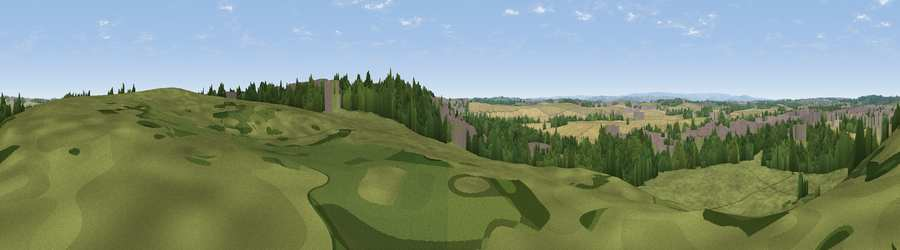

Viewpoint near North Anston
#28489 in England · top 42% of its area beats it · near North AnstonWhere it is
The exact computed spot (SK 51502 85379). Click the marker for map links.
The view, rendered

A 360° render of this exact spot computed from the terrain model, tree cover and land cover — summer colours, afternoon light, calibrated against photographs of famous viewpoints. Real trees, hedges and buildings will differ in detail.
The panorama
Grey silhouette: terrain skyline in each direction (720 bearings, Earth curvature and refraction included). Dashed green: skyline with trees (+15 m) and buildings (+8 m) as obstacles. Blue strip: how far the ground is visible on each bearing.
Where the view opens
Wedge length = distance to the farthest visible ground on that bearing (vegetation-aware). Rings at 10, 25 and 50 km.
What fills the view
46% grassland · 21% cropland · 19% woodland · 13% built-up · 1% bare ground
Angular shares of the visible panorama (visual magnitude), not map area. Landscape diversity 0.57 (0–1 Shannon).
Key numbers
More beautiful places nearby
The staircase of upgrades: each row has a higher view potential than everything closer. Driving times are estimates from straight-line distance, calibrated against real road routing — check an actual route before setting out.
| Place | Direction | Drive | Score |
|---|---|---|---|
| Bull Hill | S · 4 km | ~9 min | 43.6 |
| Viewpoint near Killamarsh | SW · 7 km | ~14 min | 45.9 |
| Viewpoint near Maltby | NNE · 8 km | ~16 min | 70.7 |
| Viewpoint near Whitley | WNW · 22 km | ~36 min | 72.1 |
| Viewpoint near Wharncliffe Side | WNW · 23 km | ~38 min | 75.2 |
| Tissington Hill | SW · 49 km | ~70 min | 75.5 |
| Wild Bank | WNW · 54 km | ~76 min | 76.2 |
| Viewpoint near Carrbrook | WNW · 54 km | ~76 min | 77.1 |
53.36278, -1.22756 · source: osm viewpoint · position refined by local search. Computed location — check access rights before visiting.